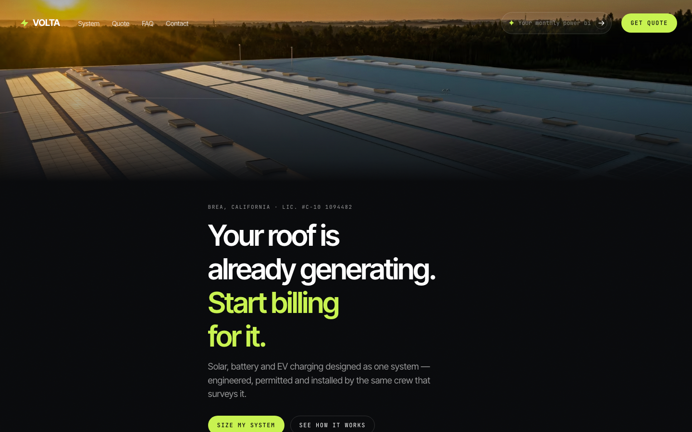
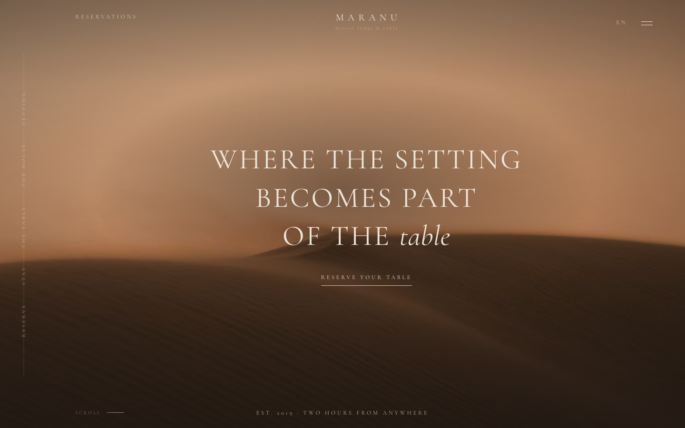
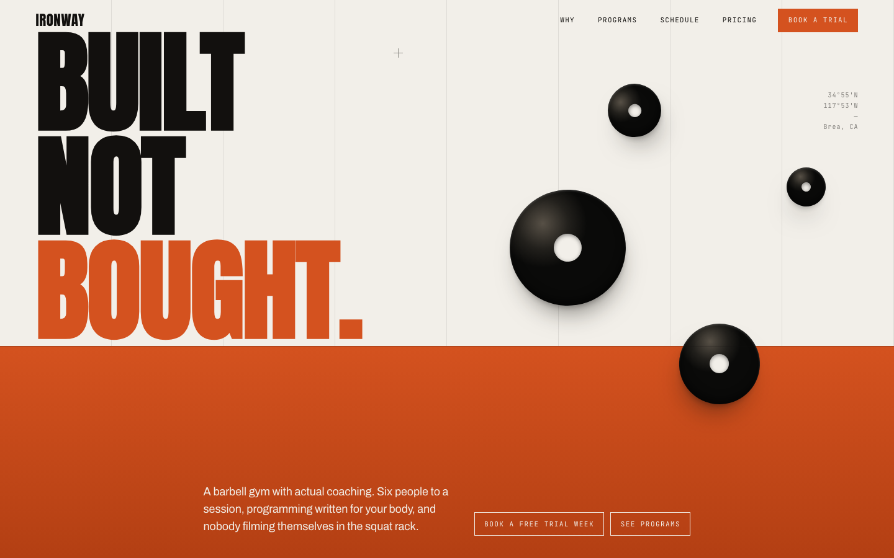

MVS SOLVES
Demo pack — 2026
—
Three builds.
One taste library

01 — Volta

02 — Maranu

03 — Ironway
VOLTA
Trades & home services
Tap to open
Static HTML · No framework
Placeholder pricing — swap before client use